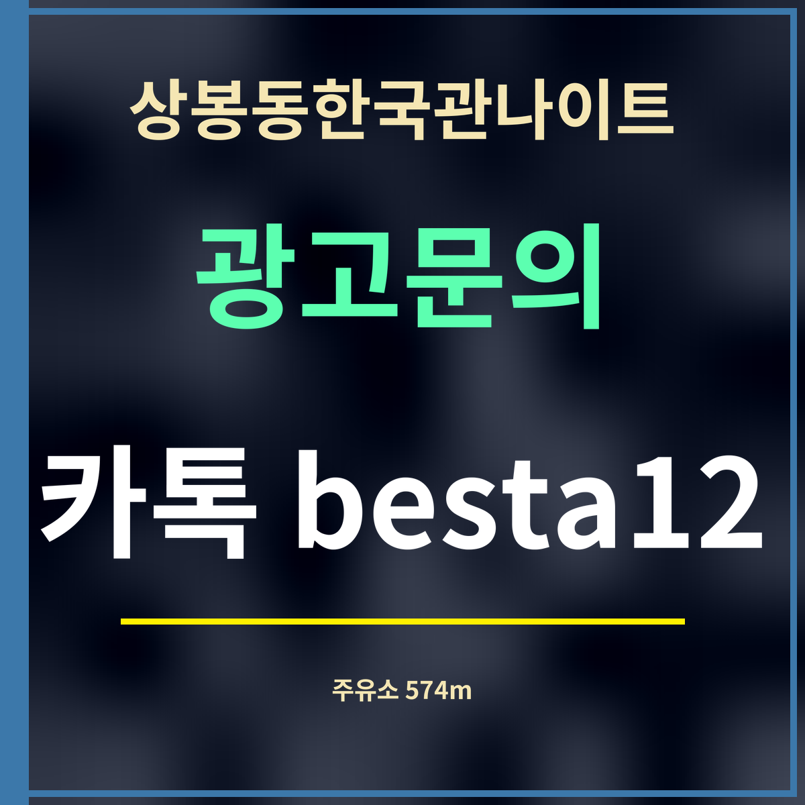

19세 미만 출입 금지
상봉동한국관나이트 가는 길 주유소, 574m 봉우재로부터
제휴 없는 정보 안내 · 주유소 상표와 주소는 카카오맵 표시(9월 27일)를 옮겼고, 기름값은 날마다 바뀌어 적지 않았습니다.

요약하면: 상봉동한국관나이트에서 가장 가까운 주유소는 대양주유소(GS칼텍스) 574m, 다음은 신일셀프주유소(SK주유소) 789m, 우림주유소(GS칼텍스) 975m입니다.
가까운 순서 8곳
| 이름 | 주소 | 상표 | 직선거리 |
|---|---|---|---|
| 대양주유소 | 봉우재로 105 | GS칼텍스 | 574m |
| 신일셀프주유소 | 상봉로 58 | SK주유소 | 789m |
| 우림주유소 | 용마산로 487 | GS칼텍스 | 975m |
| 구도일동천주유소 | 동일로 654 | S-OIL | 1,146m |
| 자연에너지 대창주유소 | 동일로 636 | HD현대오일뱅크주유소 | 1,301m |
| 면목주유소 | 동일로 627 | SK주유소 | 1,410m |
| 태영 구도일주유소한인 | 망우로 170 | S-OIL | 1,551m |
| 대원주유소 | 동일로 600 | GS칼텍스 | 1,619m |
어느 길에 있나
가장 가까운 대양주유소는 봉우재로에, 신일셀프주유소는 상봉로에 있습니다. 동일로를 따라서는 1.1~1.6km 사이에 네 곳이 늘어서 있어, 동일로로 들어오거나 나가는 길이라면 그쪽에서 넣는 편이 돌아가지 않습니다. 망우로를 따라 번호가 작아지는 쪽으로 가면 망우로 170의 주유소(1,551m)가 있습니다.
셀프 여부는 이름에 「셀프」가 붙은 신일셀프주유소만 목록에서 확인됩니다. 기름값과 영업시간은 목록에 없으니 주유 앱이나 지도 앱에서 확인하세요. 가게에서 술을 마실 계획이라면 차는 주차장에 두고, 주유는 다음 날로 미루는 것이 맞습니다.
자주 묻는 것
가장 가까운 주유소는요?
대양주유소(GS칼텍스 · 중랑구 봉우재로 105)로 직선 574m입니다.
대양주유소(GS칼텍스 · 중랑구 봉우재로 105)로 직선 574m입니다.
셀프 주유소가 있나요?
신일셀프주유소(SK · 상봉로 58)가 직선 789m입니다.
신일셀프주유소(SK · 상봉로 58)가 직선 789m입니다.
기름값은요?
목록에 가격이 없어 적지 않았습니다. 주유 앱에서 확인하세요.
목록에 가격이 없어 적지 않았습니다. 주유 앱에서 확인하세요.
한 줄 정리: 상봉동한국관나이트에서 가장 가까운 주유소는 574m 봉우재로 대양주유소 — 1km 안에 세 곳입니다.
전기차라면 전기차 충전소가 더 가깝습니다.